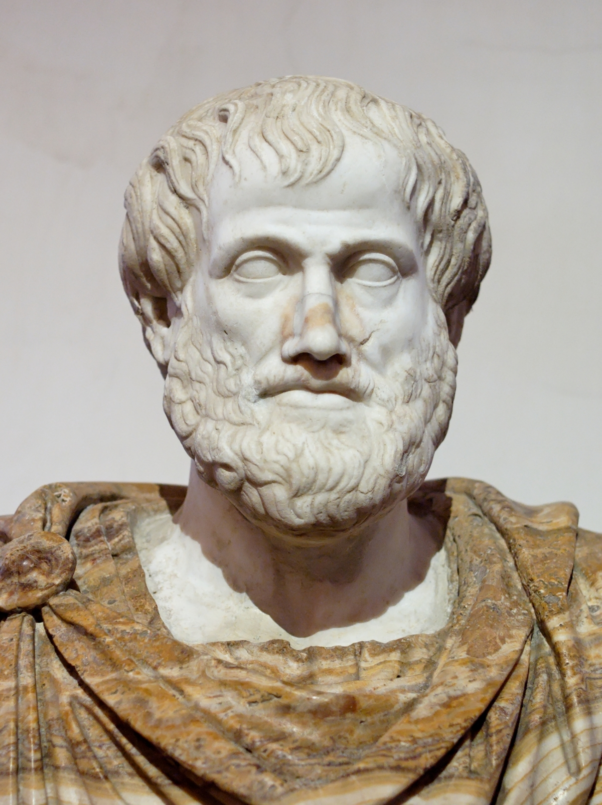

Aristotle (384-322 BC)
Not all who wander are lost
If you like reading about philosophy, here's a free, weekly newsletter with articles just like this one: Send it to me!
Every human life is a collection of experiences, moments, images. A product of the books, stories, places and people that shaped the person. And the work can never be separated from the man as neatly as some histories of philosophy pretend. Life and work form a whole, and in order to understand the one, we always also have to look at the other.

A timeline of Aristotle’s life shown over a map of ancient Greece.
Aristotle’s life and work
This is never so clear as it is with philosophers. Not dependent on observation or experiment for their theories, philosophers are freer than other academics to shape their theories to follow the contours of their own personalities. Kant’s ethics of stern duty is just the thing you would imagine this sourly man to produce, who was famous for living his life by the clock, going for his precisely measured walk at exactly the same minute every day. Quarrelsome Schopenhauer, the man who once didn’t get a philosophy prize in an essay contest in which he was the only contestant, is famous for his pessimist attitude to life. And nagging Socrates, walking around barefoot and poking fun at experts, is just the character to embody a philosophy of radical questioning of authority and striving for a higher wisdom that was rooted in the personal and the unconventional.
Aristotle himself is a man of contradictions. A philosopher, whose main body of work is not about philosophy at all — but about biology, astronomy, literary theory and practically everything else that one could scientifically explore in his time. More than a philosopher, Aristotle was a comprehensive “scientist.” It just so happens that his scientific work was not as enduring as his philosophy so that today we don’t think of him as a bad biologist or a failed astronomer; we think of him as a good philosopher.

But this is not due to any feature in Aristotle’s thought; rather, it is a result of the lack of progress in philosophy since the ancient times. All the natural sciences have long left Aristotle’s ideas behind, always discovering new ways to explain the world: evolution, natural selection, cellular biology, genetic material, neurons. Or stars, planets, nuclear fusion, the solar system, asteroids, other galaxies, exoplanets, black holes, black matter. It is only some areas of philosophy that have stayed largely the same since Aristotle’s time — where his ideas can still compete with the best that is available today. One might wonder why this is the case. Is the human condition so constant and unchanging? Is it so hard to make any progress in understanding it? Or is there another reason why what we call philosophy seems to have been going around in circles for the past two thousand years?

Aristotle’s theory of happiness rests on three concepts: (1) the virtues; (2) phronesis or practical wisdom; and (3) eudaimonia or flourishing.
Note that Heidegger, one of the greatest philosophers of the 20th century, based his philosophy heavily on a discussion and critical reception of Aristotle. Heidegger was a contemporary of Werner Heisenberg (quantum mechanics) and Albert Einstein (theory of relativity). Imagine Einstein creating his theory of relativity as an answer to some problems in the theory of Forms of Plato, or Heisenberg creating his uncertainty principle with reference to Heraclitus. This is how slow progress in philosophy has been since the times of the ancient Greeks.
Live Happier with Aristotle: Inspiration and Workbook (Daily Philosophy Guides to Happiness).
In this book, philosophy professor, founder and editor of the Daily Philosophy web magazine, Dr Andreas Matthias takes us all the way back to the ancient Greek philosopher Aristotle in the search for wisdom and guidance on how we can live better, happier and more satisfying lives today.
Get it now on Amazon! Click here!

Provincial beginnings
Aristotle (384-322 BC) then, is still very relevant and widely discussed, not only in ethics and the theory of happiness but also in logic and metaphysics. In order to understand him as a person, it is important to realise that he was not an Athenian citizen. He was born in a small provincial town, Stageira. His parents were wealthy and educated, and they gave the young boy a good education.
In a striking parallel to the life of Bertrand Russell, whom we just discussed a few days ago, both his parents died when he was only thirteen years old and Aristotle was raised by an uncle. When he was 17, he left Stageira and his uncle’s house and moved to Athens, then the only city where an intellectually curious young man would want to study.
Stageira today
Aristotle and Plato’s Academy
He enrolled in Platos’ Academy and stayed there for 20 years, often criticising Plato’s teachings and slowly developing his own way of thinking. In fact, although they were teacher and student, the two are so different that some historians see the whole Western tradition of philosophy split into two distinct branches: the Platonic, quasi-mystical tradition, which goes down the ages with the Jewish and Christian mystics, up to Kierkegaard, Nietzsche and the continental tradition of the present; and the Aristotelian line, which includes Descartes, Hume, Kant and continues into the present with the Vienna Circle, Russell and the analytic schools of logic and philosophy.
Perhaps this deep unease between the two is the reason why Aristotle was never given the option to succeed his teacher Plato after his death. It might also have to do with the fact that Aristotle was not only a foreigner — he was also associated with Macedonia, a kingdom in the north, and the Macedonian kings were, just at that time, threatening to take over control over the whole of Greece. Or it might just have been the first well-documented instance of corruption and nepotism, that has plagued the Greek university system ever since. Plato’s successor turned out to be his nephew, a man called Speusippos, whom today nobody talks about.
The slave who became king
Aristotle, disgruntled and disappointed, leaves the most famous philosophy school in the world of his time and goes to visit his friend Hermias of Atarneus, whom he had met at the Academy. Interestingly, this man Hermias used to be a slave to a banker who ruled Atarneus. Hermias was so clever and did his work so well that the banker freed him. Not only that: after the banker’s death, Hermias the ex-slave became himself the ruler of Atarneus.
This is interesting if we consider what Aristotle says in his ethics about the value of human excellence. Aristotle is always saying that the good man, the one who diligently practices his virtues and always tries to increase his wisdom will be unstoppable: he will almost necessarily end up being successful in the world, morally good and happy. Today, we might think of that as an exaggeration, a fairy tale. But for someone who had known Hermias, the slave who became king just because of his good qualities, his diligence and his intelligence, Aristotle’s ideas would not sound exaggerated at all. He had seen just such a man with his own eyes, he had studied with him and then gone and claimed his successful friend’s protection when his own career seemed to break down.
Aristotle founded his first own philosophy school there, in the land of his friend Hermias, and married his first wife, Pythias. They later had a daughter together which, in a somewhat mystifying failure of imagination, they also called Pythias, just like her mother.
Teaching Alexander the Great
After some further travelling, during which Aristotle did much of his botanical research and visited Lesbos (the name-giver of lesbianism and today home of the worst refugee camp in the Mediterranean), he was invited to the court of the king of Macedonia and was made head of the Royal Academy. Athens was by then declining in military strength and King Philipp of Macedonia was the new strong man in Greek politics. And he had a son, whom Aristotle was hired to teach: the boy whom we today know as Alexander the Great, conqueror of most of Asia and almost the whole of what the Greeks perceived as the world back then, military genius and ruler of the greatest empire the world had seen up to that point. Aristotle arguably has a part in Alexander’s future deeds: he encouraged the boy to fight and conquer the east and to treat the “barbarians” in Asia as “beasts and plants.”
A timeline of Aristotle’s life shown over a map of ancient Greece.
After a few years as Alexander’s teacher, Aristotle returned to Athens and founded the Lyceum, his own school of philosophy. There, philosophers would walk around while discussing, which gave them the name “peripatetic” school (from peripatos = walking around). His first wife died and Aristotle remarried, having a son from his second wife, whom he named after his own father (as Greeks still do): Nicomachus. The son’s name is today almost as famous as the father’s, but not for anything that he accomplished in life. He was, perhaps, a philosopher himself, might have written a commentary on some of Aristotle’s work, and died young in battle. But his name has become immortal as the title of the most famous of Aristotle’s books on ethics: the Nicomachean ethics, presumably written as notes for his son.
The final purpose of things
One of Aristotle’s recurring ideas is that all things strive towards realising the best version of themselves, their final purpose. This applies to plants, animals and, of course, man. The final purpose of human beings is, for Aristotle, to realise to the highest degree those capabilities that are unique to them: to use their virtues in accordance with their human reason. But if reason is the highest quality of man, then the best kind of human must be the one who uses, extends and deepens their reason all the time: the scientist and the philosopher. And this is what Aristotle himself tried to be all his life.

Aristotle. Source: Wikipedia
We see again how the life and the philosophy mesh. In the case of Aristotle, it is very clear to see how the philosopher emerges from the man:
Aristotle was a foreigner almost everywhere he lived. He was always trying to fit in and to succeed in places that were not his home. You can see this in the way he talks about success, striving and excellence, but also in his insistence on phronesis, on knowing the right way of doing things. This is not the experience of one who naturally fits into a society and a place, but of someone who is very much aware of the need to understand new rules all through their life, to always adapt to new places and to advance socially in them.
Aristotle was himself privileged, son of a royal doctor, later teacher of a young king. Not only does his philosophy recognise the value of material goods for happiness; it is also fundamentally anti-democratic and anti-egalitarian. For Aristotle, we are not all the same, by any means. Human beings cover a whole spectrum of accomplishment and goodness, from the criminal to the sage, and it is in everyone’s own, personal responsibility to make the best of themselves and their lives. This is very much an “American dream” type of attitude, the world view that would enable the kitchen boy to eventually become a millionaire — or the slave to become a king, as Aristotle’s friend Hermias actually did.
Aristotle was, at the core, an unhappy man, someone who never belonged. He left his home, went to study with Plato, but was ultimately not accepted as the new leader of Plato’s school. He later had to flee to Macedonia, from there again to Athens, and out of Athens again. The only constant element in his life was his research. And in this, again, he is similar to Bertrand Russell, who also tell us that it was only his fascination with mathematics that kept him alive throughout his youth. Aristotle’s prodigious output of dozens of books on all sciences, on philosophy and on literary theory is the work of a haunted man, a man who tries to find the missing peace of his life in manic work.
And, finally, Aristotle was a man who befriended and worked with two of the greatest achievers in human history: he had its greatest philosopher as a teacher and one of its greatest generals as his student. Again, this emphasises and makes more understandable the value he puts on excellence. For Aristotle, excellence was not something he was just talking about. He had himself witnessed, twice, true excellence of the kind that many people never get to experience. And it left its mark on him.
Plato and Aristotle, the two giants of ancient Greek thought, come to philosophy from opposite ends of a spectrum. Plato is the philosopher of the eternal, the thinker whose dream is to transcend, to leave behind everything worldly and imperfect and live forever in a world of perfect ideas. Aristotle, on the other hand, is the philosopher of human striving, of the fight to tame one’s own weaknesses, to learn, to grow, and to become happy and perfect in this world, not in the next. It is not eternity Aristotle is after — but a good life, for as long as it lasts.
For Plato, the contemplation of the absolute Good is the highest form of existence. For Aristotle, the paradoxical elitist-refugee philosopher, haunted teacher of kings, it is rolling up one’s sleeves and going to work: for a better world in the here and now.
Live Happier with Aristotle: Inspiration and Workbook.
In the book to this series of articles you're reading right now, philosophy professor, founder and editor of the Daily Philosophy web magazine, Dr Andreas Matthias takes us all the way back to the ancient Greek philosopher Aristotle in the search for wisdom and guidance on how we can live better, happier and more satisfying lives today.
Get it now on Amazon! Click here!

Thanks for reading! If you liked this article, please consider sharing and don’t forget to subscribe!